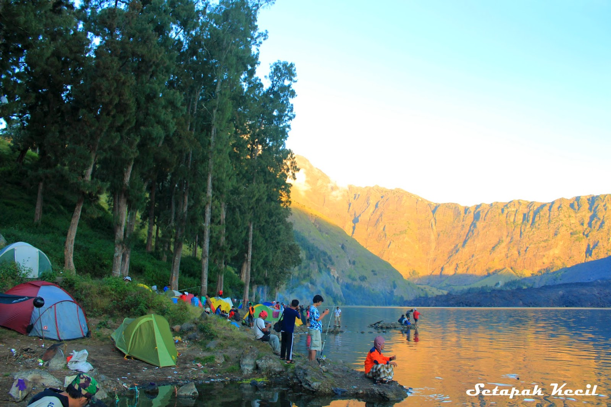
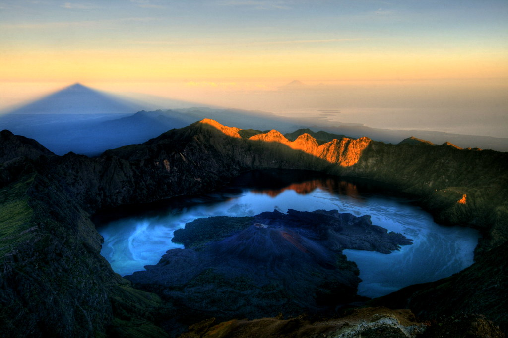
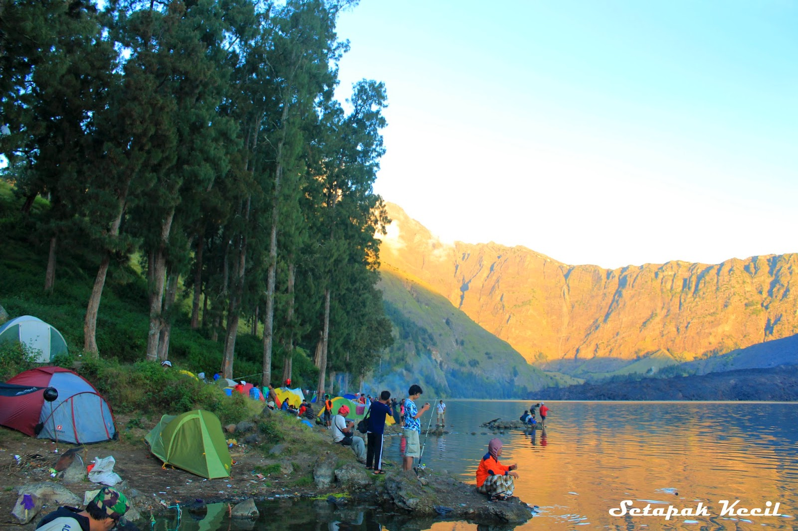
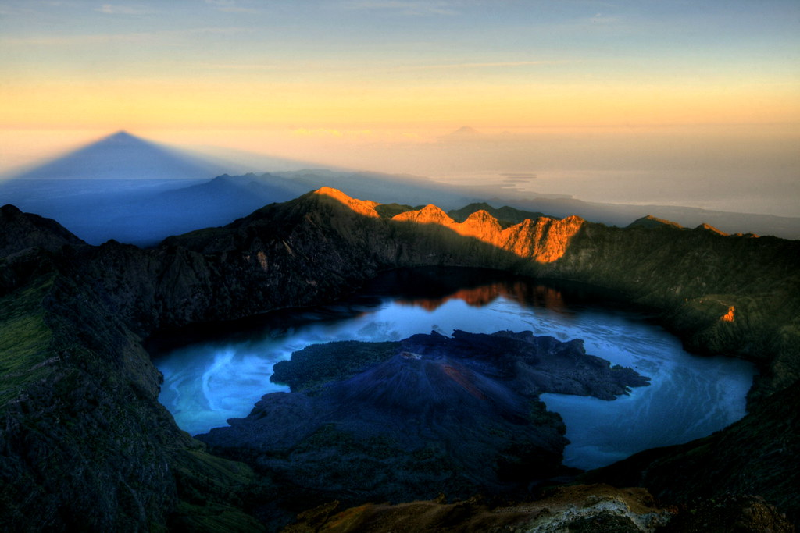

Pesona Indonesia
Pesona Lombok

Hai Teman-Teman Semua!
Promosi Pendakian Gunung Rinjani!
Tersedia Beberapa link.
Pemandangan Gunung Rinjani
Pesona Indonesia


 



Sinopsis
Gunung Rinjani adalah gunung yang berlokasi di Pulau Lombok, Nusa Tenggara Barat. Gunung yang merupakan gunung berapi kedua tertinggi di Indonesia dengan ketinggian 3.726 mdpl serta terletak pada lintang 8º25' LS dan 116º28' BT ini merupakan gunung favorit bagi pendaki Indonesia karena keindahan pemandangannya.Gunung ini merupakan bagian dari Taman Nasional Gunung Rinjani yang memiliki luas sekitar 41.330 ha dan ini akan diusulkan penambahannya sehingga menjadi 76.000 ha ke arah barat dan timur. Secara administratif gunung ini berada dalam wilayah tiga kabupaten: Lombok Timur, Lombok Tengah, dan Lombok Utara.
Lokasi Google Map
Update 2022
Puncak Gunung Rinjani
Pendakian Gunung Rinjani (puncak) merupakan salah satu objek wisata yang menjadi andalan di kawasan Taman Nasional Gunung Rinjani. Gunung Rinjani sebagai gunung vulkanik yang masih aktif nomor 2 tertinggi di Indonesia. Puncak Gunung Rinjani merupakan tujuan sebagian besar para petualang dan pencinta alam yang mengunjungi kawasan ini karena apabila telah berhasil mencapai puncak itu merupakan suatu kebanggaan tersendiri. Animo komunitas pencinta alam di seluruh nusantara bahkan dari mancanegara dalam kegiatan pendakian cukup besar, ini terbukti dengan jumlah pengunjung yang melakukan pendakian setiap tahunnya mengalami peningkatan. Kegiatan pendakian secara besar-besaran dilakukan pada bulan Juli s/d Agustus, pada bulan Agustus (pertengahan) peserta pendakian umumnya didominasi oleh kalangan pelajar/mahasiswa dari seluruh Indonesia yang ingin merayakan HUT Kemerdekaan Republik Indonesia di Puncak Gunung Rinjani dan Danau Segara Anak melalui kegiatan “Tapak Rinjani” yang diadakan secara rutin setiap tahunnya oleh salah satu kelompok pencinta alam di Pulau Lombok yang bekerjasama dengan Balai Taman Nasional Gunung Rinjani.

Caption
Allhamdulilah berkat doa dan restu ibu 🖤🤍.

Caption
Terkadang kita perlu belajar untuk menjadi kuat daripada biasanya😇🐣 . Kekuatan itu selalu ada karena ada penyemangat yaitu diri kita sendiri. . Semangat pejuang tangguh. Kamu hebat! 😇🫶 . 📍Gunung Rinjani via Sembalun, Lombok, Nusa Tenggara Barat.

Caption
Siapa nih yg kangen mancing di Segara Anaknya Rinjani? Cung😹☝🏻.
Danau Segara Anak
Pesona unggulan Taman Nasional Gunung Rinjani yang sangat prospektif adalah Danau Segara Anak, lokasi ini dapat ditempuh dari dua jalur resmi pendakian yaitu jalur pendakian Senaru dan jalur pendakian Sembalun.Untuk mengunjungi Danau Segara Anak dari jalur Senaru dibutuhkan waktu tempuh sekitar 7 – 10 jam berjalan kaki (± 8 Km) dari pintu gerbang jalur pendakian Sedangkan dari jalur pendakian Sembalun ditempuh dalam waktu 8 – 10 jam. Danau segara anak dengan ketinggian ± 2.010 m dpl dan kedalaman danau sekitar ± 230 meter mempunyai bentuk seperti bulan sabit dengan luasan sekitar 1.100 Ha.Disekitar Danau Segara Anak terdapat lahan yang cukup luas dan datar, dapat digunakan untuk tempat berkemping/berkemah, juga pengunjung bisa memancing ikan di danau atau berendam di air panas yang mengandung belerang.Objek lainnya di sekitar Danau Segara Anak adalah Hulu Sungai Koko Puteq ± 150 meter dari Danau Segara Anak. Selain itu terdapat pula Goa Susu, Goa Manik, Goa Payung, Goa Susu dipercaya dapat dijadikan media becermin diri serta sering pula dipergunakan sebagai tempat bermeditasi. Sedangkan di bagian bawah Danau Segara Anak terdapat sumber air panas (Aik Kalak Pengkereman Jembangan) yang biasa digunakan untuk menguji dan memandikan benda-benda bertuah (Pedang, Keris, Badik, Tombak, Golok, dll) dimana jika benda-benda tersebut menjadi lengket apabila direndam itu menandakan benda-benda tersebut jelek/tidak memiliki kekuatan supranatural, sebaliknya apabila benda-benda tersebut tetap utuh berarti benda tersebut memiliki kekuatan supranatural/dipercaya memiliki keampuhan.
Pendakian
Rinjani memiliki panaroma paling bagus di antara gunung-gunung di Indonesia. Setiap tahunnya (Juni-Agustus) banyak dikunjungi pencinta alam mulai dari penduduk lokal, mahasiswa, pecinta alam. Suhu udara rata-rata sekitar 20 °C; terendah 12 °C. Angin kencang di puncak biasa terjadi di bulan Agustus. Selain puncak, tempat yang sering dikunjungi adalah Segara Anakan, sebuah danau terletak di ketinggian 2.000m dpl. Untuk mencapai lokasi ini kita bisa mendaki dari desa Senaru atau desa Sembalun Lawang (dua entry point terdekat di ketinggian 600m dpl dan 1.150m dpl) di daerah Sembalun Ada empat jalur pendakian yang resmi untuk menuju Gunung RInjani, Jalur Sembalun (Lombok Timur), Jalur Senaru (Lombok Utara), Jalur Aik Berik (Lombok Tengah), dan Jalur Timbanuh (Lombok Timur). Kebanyakan pendaki memulai pendakian dari rute Sembalun dan mengakhiri pendakian di Senaru, karena bisa menghemat 700 m ketinggian. Rute Sembalun agak panjang tetapi datar, dan cuaca lebih panas karena melalui padang savana yang terik (suhu dingin tetapi radiasi matahari langsung membakar kulit). krim penahan panas matahari sangat dianjurkan. Dari Rute Senaru tanjakan tanpa jeda, tetapi cuaca lembut karena melalui hutan. Dari kedua lokasi ini membutuhkan waktu jalan kaki sekitar 7 jam menuju bibir punggungan di ketinggian 2.641m dpl (tiba di Plawangan Senaru ataupun Plawangan Sembalun). Di tempat ini pemandangan ke arah danau, maupun ke arah luar sangat bagus. Dari Plawangan Senaru (jika naik dari arah Senaru) turun ke danau melalui dinding curam ke ketinggian 2.000 mdpl) yang bisa ditempuh dalam 2 jam. Di danau kita bisa berkemah, mancing (Carper, Mujair) yang banyak sekali. Penduduk Lombok mempunyai tradisi berkunjung ke segara anakan untuk berendam di kolam air panas dan mancing. Untuk mencapai puncak (dari arah danau) harus berjalan kaki mendaki dinding sebelah barat setinggi 700m dan menaiki punggungan setinggi 1.000 m yang ditempuh dlm 2 tahap 3 jam dan 4 jam. Tahap pertama menuju Plawangan Sembalun, camp terakhir untuk menunggu pagi hari. Summit attack biasa dilakukan pada pukul 3 dinihari untuk mencari momen indah - matahari terbit di puncak Rinjani. Perjalanan menuju Puncak tergolong lumayan; karena meniti di bibir kawah dengan margin safety yang pas-pasan. Medan pasir, batu, tanah. 200 meter ketinggian terakhir harus ditempuh dengan susah payah, karena satu langkah maju diikuti setengah langkah turun (terperosok batuan kerikil). Buat highlander - ini tempat yang paling menantang dan disukai karena beratnya medan terbayar dengan pemandangan alamnya yang indah. Gunung Agung di Bali, Gunung Raung di Banyuwangi dan Gunung Tambora di Sumbawa terlihat jelas saat cuaca bagus di pagi hari. Untuk mendaki Rinjani tidak diperlukan alat bantu, cukup stamina, kesabaran dan gairah pendaki. Keseluruhan perjalanan dapat dicapai dalam program tiga hari dua malam, atau jika hendak melihat dua objek lain: Gua Susu dan gunung Baru Jari (anak gunung Rinjani dengan kawah baru di tengah danau) perlu tambahan waktu dua hari perjalanan. Persiapan logistik sangat diperlukan. Disarankan untuk menggunakan jasa guide lokal yang berpengalaman untuk risiko tersesat dan tetap menghormati budaya adat setempat. Global Geopark.